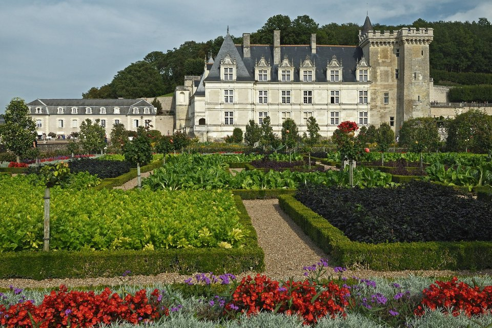

France · Villandry
Château de Villandry audio guide
5 stops · 8 min · offline · plays as you arrive
The guide price is €1.99. This button is a placeholder. It does not open checkout and does not take payment. Email hello@getearwise.com.
A 5-stop offline audio guide to Château de Villandry in Villandry, recorded in 10 languages and designed to play as you arrive. It covers the Renaissance château and its famous ornamental kitchen, water, and love gardens above the Cher. Download once; you will not need a signal on the ground.
Stops
- 1
The Château and Its Keep
This part of the route looks at The Château and Its Keep.
- 2
The Ornamental Kitchen Garden
The next story is about The Ornamental Kitchen Garden.
- 3
The Garden of Love
Here the guide turns to The Garden of Love.
- 4
The Water Garden
A short story at this point covers The Water Garden.
- 5
The Château Interior
This stop is given to The Château Interior.
On the map
All 5 stop pins for this guide are marked. Open map